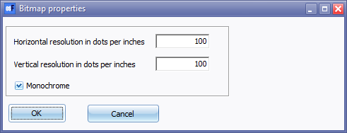
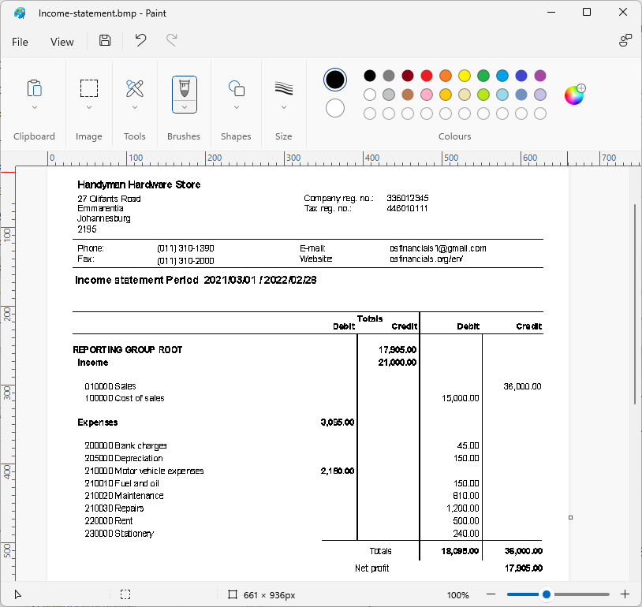

Reportman output - Save metafile as bitmap
The "Bitmap File" type extension is a Bitmap image file. The BMP file contains raster graphics data which are independent of display devices. BMP images may be uncompressed or compressed with a lossless compression method.
Saving a report or document layout as a Bitmap file is useful when you need a high-resolution, device-independent image. However, be aware that Bitmap files can be much larger than their compressed counterparts, such as PDFs. Always consider the intended use and storage requirements before choosing the Bitmap format.
This significant increase in file size is due to the uncompressed nature of Bitmap files, which store each pixel of the image individually.
What is the color of a monochrome image?
A monochrome image typically refers to an image that uses a single color or shade to represent all the pixels. The most common interpretation of a monochrome image is that it is black and white.
Key Points:
- Black and White: In a strict sense, a monochrome image is usually black and white, meaning it uses only two colors: black and white. This is often referred to as binary or bitonal imaging.
- Grayscale: Sometimes, the term "monochrome" can also refer to images that use a range of shades of gray, from black to white. This is known as grayscale imaging. In this case, the image can have varying shades of gray, but it still uses only one color channel (gray).
- Practical Consideration:
- Default Setting: When you select "Monochrome" as the color mode in the "Bitmap properties" screen, it typically means the image will be rendered in black and white. However, if the software allows for grayscale options within the monochrome setting, it might also include shades of gray.
- Example:
- Binary Monochrome: An image where every pixel is either black or white.
- Grayscale Monochrome: An image where every pixel can be any shade of gray, but there are no colors other than shades of gray.
The default interpretation of a monochrome image is black and white. However, depending on the software and settings, it might also include shades of gray, making it a grayscale image. Always check the specific settings and documentation of the software you are using to confirm the exact behavior of the monochrome option.
What apps or tools can be used to open bitmap files?
Bitmap files, which typically have the .bmp file extension, can be opened and viewed using a variety of applications and tools. Here are some common options:
- Microsoft Paint: A basic image editor that comes pre-installed with Windows.
- Microsoft Photos: A convenient and user-friendly tool for viewing and printing BMP images. While it may not offer advanced editing features like some dedicated image editors, it is more than sufficient for basic viewing and printing tasks. This makes it a handy option for quickly reviewing and printing reports or document layout files saved as BMP images.
- Adobe Photoshop: A professional image editing software.
- GIMP (GNU Image Manipulation Program): A free, open-source alternative to Photoshop.
- CorelDRAW: A vector graphics editor, but it can also import and open and edit bitmap files.
- Microsoft Word and PowerPoint: While primarily document and presentation tools, they can also open and insert bitmap images.
- LibreOffice Writer and Impress: A word processing application similar to Microsoft Word. LibreOffice Impress is a presentation application similar to Microsoft PowerPoint.
- Google Photos: An online photo storage and viewing service.
- Web Browsers: Modern web browsers like Chrome, Firefox, and Edge can display bitmap images directly.
- Preview (macOS): A default image and PDF viewer on macOS.
- IrfanView: A fast, compact, and innovative graphics viewer for Windows.
- XnView: A freeware utility for viewing and converting graphic files.
- Online Image Viewers: Various online tools that allow you to upload and view bitmap files.
Bitmap files are widely supported and can be opened using a variety of software tools, ranging from basic image viewers like Microsoft Paint to professional image editing software like Adobe Photoshop. These files can also be opened and viewed across various operating systems, including Windows, macOS, and Linux. The choice of tool depends on your specific needs, such as viewing, editing, or sharing the image.
Save metafile options
To save reports or document layout files as a bitmap file:
- On the "Reportman print preview" screen, select Save (Ctrl+S)
 – This will launch the “Save metafile as” screen.
– This will launch the “Save metafile as” screen. - Select the directory (folder) where you need to save this file, if necessary.
- Enter a file name.
- Select the "Bitmap File (*.bmp)" file type.
- Click Save. The "Bitmap properties" screen is displayed.

|
|
To view the OK and Cancel buttons, you need to resize the "Bitmap properties" screen |

- The default values is 100 dots per inch in both the horizontal and vertical resolution.
- "Monochrome" is the default value. Leave this selected. It will create a bitmap image of the report or layout file.
|
|
These Bitmap image files may be much larger in size. For example, if an Invoice layout file is saved in the PDF file format, the size would be 277 KB (Kilobytes). The same Invoice layout file in the Bitmap format, could be as large as 3.56 MB (Megabytes). |
Income statement - Bitmap file
An example of the "Income statement" saved as a Bitmap file, opened in "Paint", is as follows:
